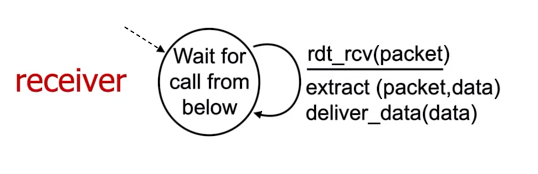
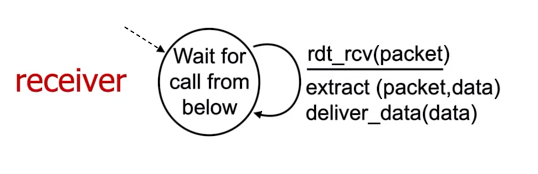
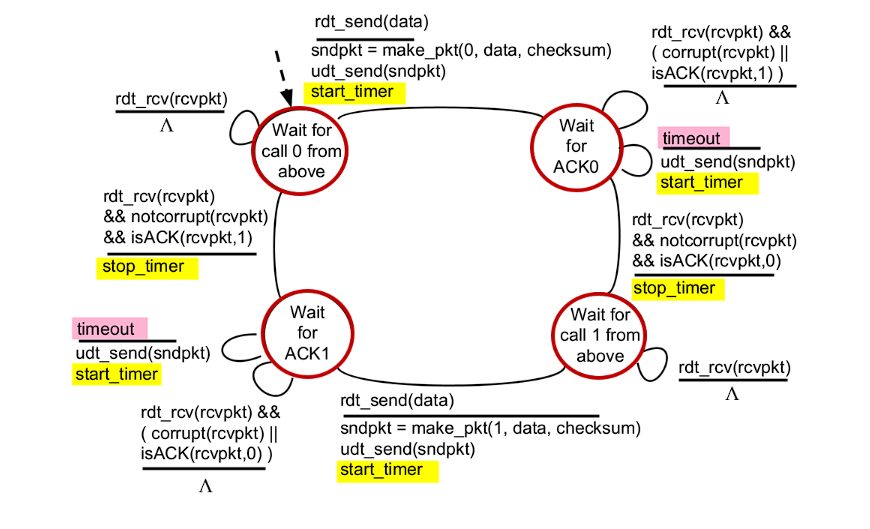

What we basically have is a form of logical communication between the sender and receiver to achieve lossless data transmission on a noisy channel.
Breaks up the message into segments and adds necessary headers and then transmits them based on some algorithm and passes it to the Network Layer.
Reassembles the segments into messages and check the header for stuff and demux the message onto approriate application layer socket.
This is what happens to send and receieve messages from 2 hosts, we implement this transport using either TCP or UDP.
Literally just select shit.
Datagrams have Source IP and ports and Destination IP and ports, as can be seen in the TCP/UDP segment format. The host uses these information to direct segment to appropriate segment.
UDP Destination port along with the Source port for the connectionless demuxing
TCP Destination IP and Port and Source IP and Port for the connection-oriented demuxing
UDP is defined in RFC 768 which you can find here
Reliability and congestion control can be added in application layer if needed
UDP HEADER IS 8 BYTES (IMPORTANT)

Literally just the checksum, used to check 1-bit errors. UDP treats whole contents as 16-bit integers and then checksums on those.
Starting off with rdt short for reliable data transfer and udt for unreliable data transfer.
First rdt_send(), udt_send(), then rdt_receive() and finally deliver_data().
First 2 work on host and last 2 on receiver.
Control messages bi-directoinal but data flow only in one direction
The finite state machine for rdt1.0 is as shown below for the sender and receiver:
 

Now we try to recover from errors. To do this we introduce:
This is known as the STOP AND WAIT PROTOCOL
The Fsm for this is as below:


BUUUUUUUUUUUUUTTTT, ACKS and NAKS too can be corrupted so this is a flaw for rdt2.0 and we can't just retransmit ACKS and NAKS since this could bring up the issue of duplicate packets being sent.
This is basically rdt2.0 but can handle erronous ACKS and NAKS by adding a sequence number to each packet so that when retransmitting the ACKS or NAKS we don't have duplicates.
The fsm's are as below:
Sender:

Receiver:

ONLY ONE SEQ NO REQUIRED BECASUE STOP AND WAIT PROTOCOL SINCE ONLY 1 PACKET IS EVER IN TRANSMISSION
Now we remove NAKS and thus our protocol will only have ACKS
Receiver will send ACK along with the seq no. of the packet being ACKed, what this changes is instead of checking for a NAK it will instead check for a ACK for the specific seq no, this basically works as a pseudo-NAK
Big leagues now boi, we can now handle channels with errors and loss. We achieve this by adding a reasonable timeout
The fsm for the receiver does not change, but for the sender there are new paths to follow for the timeout and new actions where we start and stop timers.

We define some terms:
utilization, i.e. the fraction of time sender is busy sending
Transmission Delay, which is nothing but
Round Trip Time
We have that:
For a large RTT, the performance for this STOP and WAIT protocol is bad. But this is because we are waiting a long time for just 1 packet what we could instead do in the meanwhlie is send more packets specified in a certain window size, this is known as pipelinig.
But this requires more than 1-bit seq no. This is now implemented using the GO-BACK-N algorithm.
What we do here is use a cumulative ACK where as the cumulative implies we check all ACKs for the window at once.
Alternative to GO-BACK-N where receiver individually ACKS all packets, thus we need more timers, window doesn't move forward until oldest packet is ACKED
Selective Repeat could be bad since it might not recognize duplicates and not in-order delivery, so fix is seq_no.
Check these out if you want more info.

ACK for a bytestream is just the sequence number + 1 in tcp
Need greater than RTT but RTT varies, fix how? Estimate RTT and change when needed
We take the exponentially weighted moving average for the estimatedRTT, thus we have:
Here
But this is actually the timeout value, we need to add some sort of safety margin.
Thus adding that term in we have:
where DevRTT is the deviation of sorts, it is the exponentially weighted moving average of the deviation of SampleRTT from the EstimatedRTT.
where
Some events that are probably important for TCP:
This is stuff for the sender side, on the receiving side:
Basically sends the same ACK multiple times when sender sees this it retransmits oldest unACKed segment once again
There is also the idea of timeouts where we send all the packets in the window again instead of just 1.
The congestion window is dynamically adjusted to fit, in response to the observed network congestion.
TCP sending behaviour:
Slow start threshold, on loss event it gets set to

The finite state machine for TCP congestion control is as below:


Steps for the cubic algorithm:
Recent version of TCP called BBR (Bottleneck-Bandwidth-RTT) used in google's internal backbone network.
Eishob baal nai